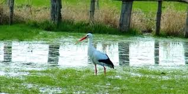

Cigogne
Prénom : Rio
Race : Ciconia ciconia
Habitat : dans les marais
La cigogne est un grand oiseau migrateur de la famille des Ciconiidés, mesurant en moyenne 1 mètre pour un poids de 2 à 6 kg. Elle est caractérisée par de longues pattes rouges (20 à 25 cm), un long bec droit et pointu qui peut atteindre 19 cm, et son plumage principalement noir ou blanc. Ses ailes sont longues et larges, pouvant atteindre une envergure de 2 mètres une fois déployées.